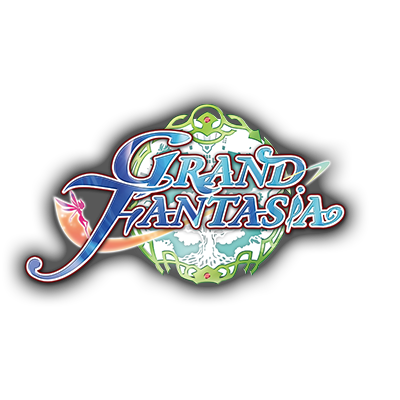
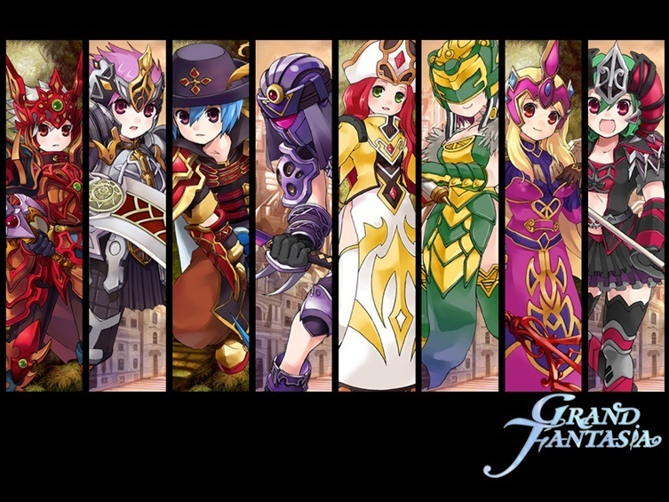
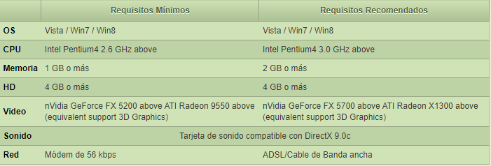

¡Bienvenido a Grand Friends!
·Una web creada por fans a partir de la información recopilatoria
de un MMORPG, "GRAND FANTASIA".

·Te invito a que conoscas mas de este juego que a tantos nos a
traido aventuras y diversion. Tanto en solitario como con amigos en busca de la gloria de consagrarse el
mejor, o tambien de hacer el bien para poder restaurar la prosperidad en Siwa.
·Acompañame en esta pagina para poder aconsejarte para y asi tener
un mejor desempeño para tu proxima aventura.
·Aqui veras una pequeña guia sobre "Grand Fantasia" un juego de rol
multijugador masivo online (MMORPG) gratuito ambientado en un mundo de fantasía expansivo y diseñado con
esmero.
·Grand Fantasia ofrece a los jugadores gran variedad de aspectos
innovadores y atrayentes, incluyendo: personalización de personajes y sprites, un sistema ramificado de
clases, diseño de sprites, una increíble variedad de monturas, combates de jugador contra jugador (PvP),
campos de batalla por equipos, desafiantes dungeons, poderosos jefes de nivel, una opción para hacer
estatuas de jugadores, boletines de anuncios dentro del juego, casas de subastas, un sistema de romances
entre jugadores, un sólido sistema de gestión y comunicación para los gremios y multitud de quests (en
solitario, en grupo, por gremios) que divertirán a todo tipo de jugadores.

¿Como puedes divertirte Jugando?
- Sube de nível a tu personaje mientras progresas por las variadas misiones en cada región. Junta a
algunos amigos e intenta terminar con éxito alguna de las desafiantes dungeons.
- Comienza tu aventura como un Novato y rápidamente logra la opción de elegir entre 1 de las 4 clases
ramificadas. Elige clases especializadas en los niveles 5, 15 y 30 para elegir entre un total de 8
clases de personajes. ¡Y puedes personalizar aún más a través del Sistema de Avance Alternativo!
- Crea tu propio sprite para que viaje contigo. Este compañero puede cosechar materias primas para ti ¡e
incluso fabricarte armas y armaduras!
- Los héroes famosos no caminan; cabalgan con estilo. Escoge entre las numerosas monturas, cada una con
requerimientos unicos para que jugadores de todo tipo accedan a ellas.
- Situadas en las ciudades principales, las Casas de Subastas sirven como centro neurálgico de venta de
artículos. Los vendedores ofrecen artículos sin compromiso. Los compradores tienen una tribuna central
para mirar las subastas y no necesitan ir puesto por puesto.
- Participa en duelos de 1 contra 1 o prueba tu fuerza en el Campo de Batalla de 15 contra 15.
- Gestiona tu gremio con cargos personalizables, quests especiales e incluso habilidades de gremio
mientras tu grupo de aliados aumenta su tamaño y su prestigio.
Requerimientos de Sistema

Código de Conducta
- Están prohibidos los insultos, amenazas, bullying, acoso de cualquier tipo, odio o incitación al odio
hacia una etnia/género/orientación/etc (racismo, homofobia…) tanto al equipo de Aeria como hacia otros
jugadores. Si un jugador es molestado o se siente acosado por otro jugador y tiene pruebas, se tomarán
las medidas necesarias.
- No está permitido hacerse pasar por un empleado de Aeria Games, GM o GS ni por ningún otro jugador.
- Compartir enlaces, páginas, programas, etc que contengan cualquier tipo de virus o malware, que se hagan
pasar por la página de Aeria, para intentar obtener los datos de la cuenta o personales de un jugador,
para estafar o cualquier otra actividad prohibida dentro de las normas de Aeria o Grand Fantasia es
motivo de baneo permanente.
- No está permitido compartir contenido, ya sean vídeos, fotografías, links, etc erótico o ilegal.
- No está permitido divulgar o hacer publicidad de otros juegos que no sean de Aeria Games.
- No está permitido hacer uso de las páginas o cualquier juego de Aeria Games para difundir software
ilegal o dañino, ya sea para publicitar, divulgar o preguntar por cheats, bots, hacks, bugs o cualquier
herramienta injusta para los jugadores, a excepción de que el equipo de Aeria pida información sobre
ello.
- No está permitido modificar ninguna parte del cliente del juego, servidor o cualquier parte del juego.
- No está permitido explotar o abusar de un bug del juego.
- No está permitido utilizar software que interfiera o manipule el juego, de forma que beneficie al
usuario.
- No se puede crear, usar o compartir ningún servidor falso (pirata), herramienta o utilidad de software
relacionada con el juego sin autorización escrita y expresa de Aeria Games.